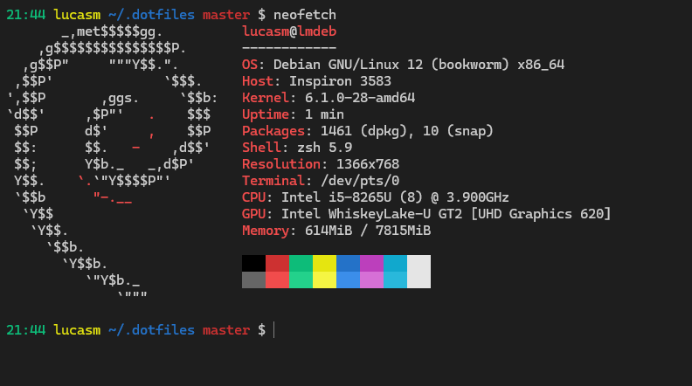

About dotfiles
Well, a thing that always irritates me when I'm setting up a new machine or formatting my main one is configuring everything once again.
I don't want to type a hundred commands just to set up my development environment, so I've been working on a custom script that will automate that process for me. I think everyone is familiar with the concept of dotfiles, hidden files in Unix based Operating Systems that serves mainly to be configuration files for specific programs.
I have a few computers and I often alter between then, even on my main PC I have different Virtual Machines and sometimes I also SSH into a Linux Server, so I want everything to be easy to transfer and compatible with all kinds of systems.
My dotfiles repo
First I created a GitHub Repo to store my dotfiles, that was a start, sure, but then I ran into some issues. For me to use my configs I had to manually clone the repo, copy the files one by one and type some commands to install and configure dependencies. Also, another problem appeared: The files in the dotfiles repo itself aren't the real files, so I needed some way to sync the repo files to the actual config files at my home directory.
Repo files: ~/.dotfiles/.config/
Real files: ~/.config/
I then created a simple Python Script to manage all my configuration files, it would just copy everything from the repo's directory to my home directory, easy peasy. I also added a script to pull changes from GitHub and sync them locally.

Instalation Script
In order to install and use my dotfiles, you just need to run this simple Shell Script:
git clone https://github.com/lucasdcampos/dotfiles .dotfiles && chmod +x .dotfiles/scripts/setup.sh && ./.dotfiles/scripts/setup.sh
You can reload the configuration files by typing .r at your terminal, and sync with github with the .s command, everything convenient.
About Vim
I also started using Vim (NeoVim) more, I never took time before to actually stop and configure Vim, I was scared of configuring it, but it was actually really simple! With a plugin manager is very easy to install plugins and customize the editor.
Of course I'm still very unproductive with it, it's hard to get yourself used to the keybindings, but that's just a matter of time.